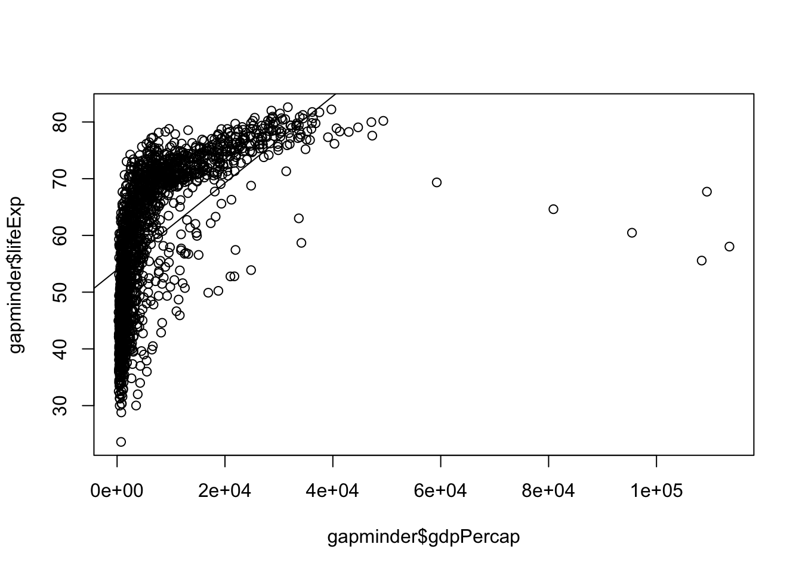
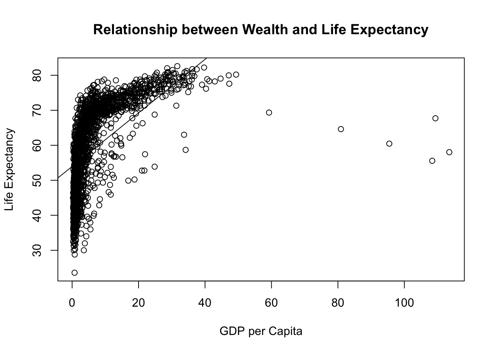
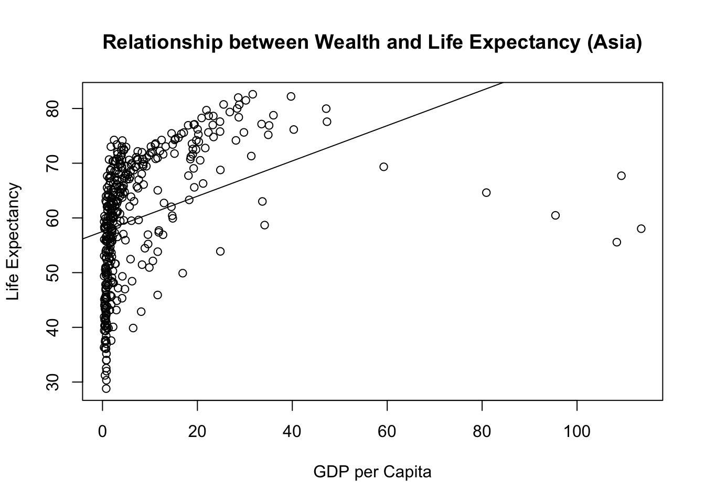
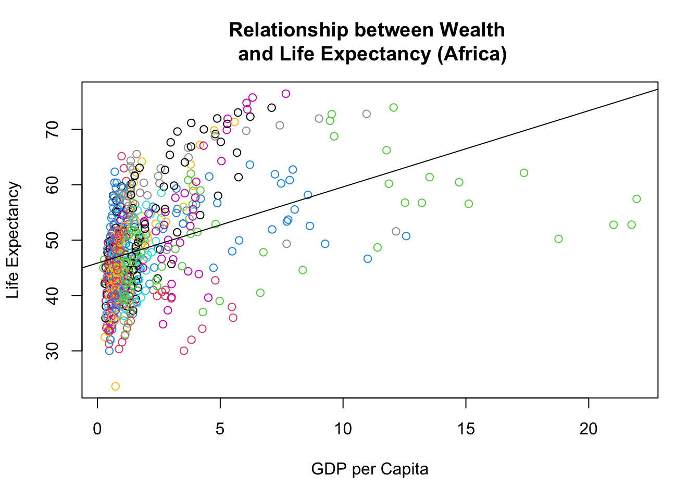
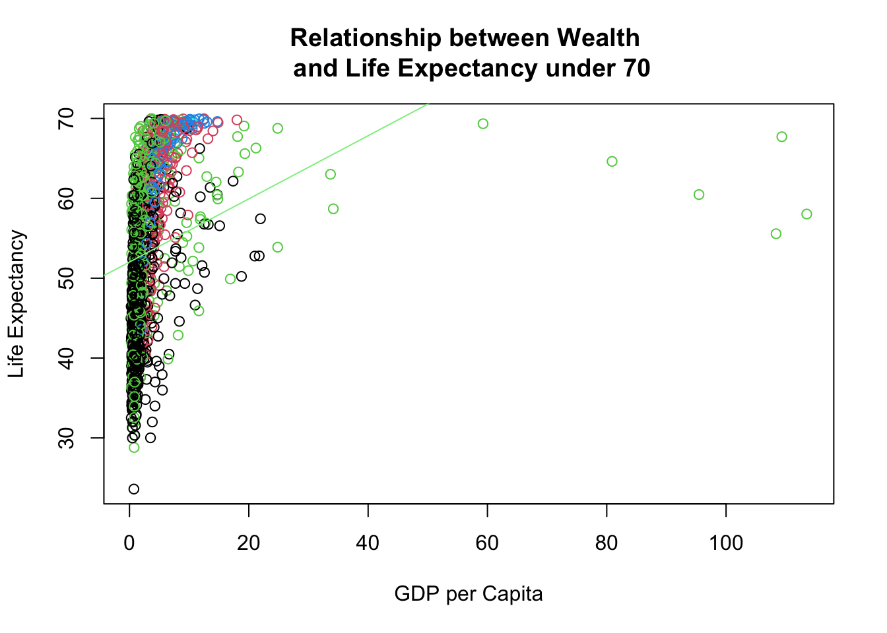
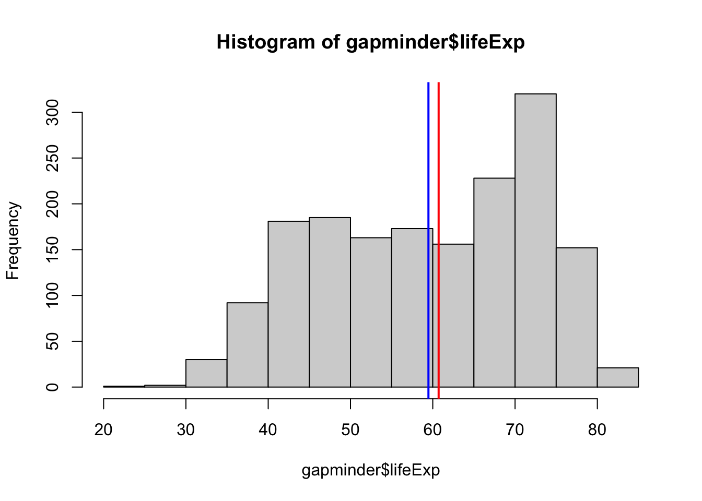
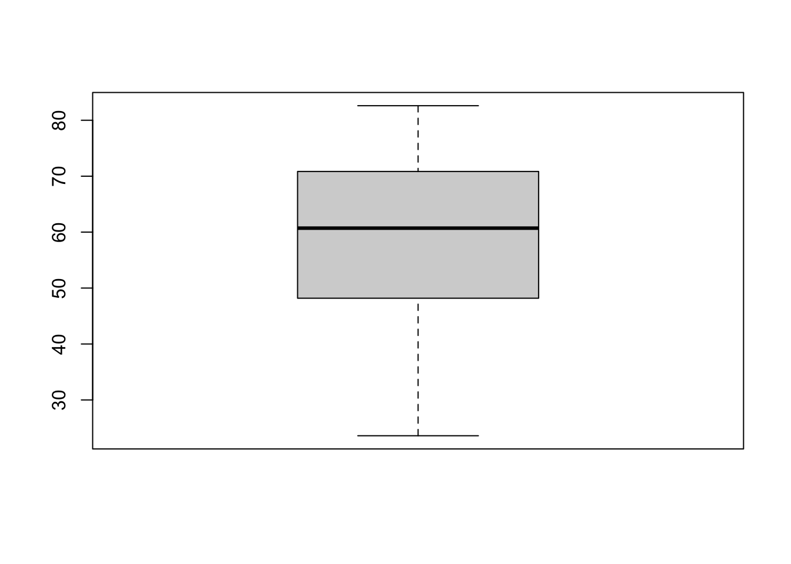
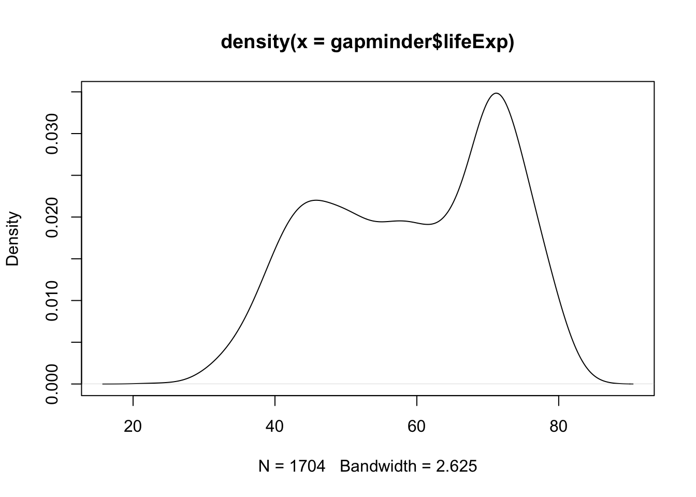
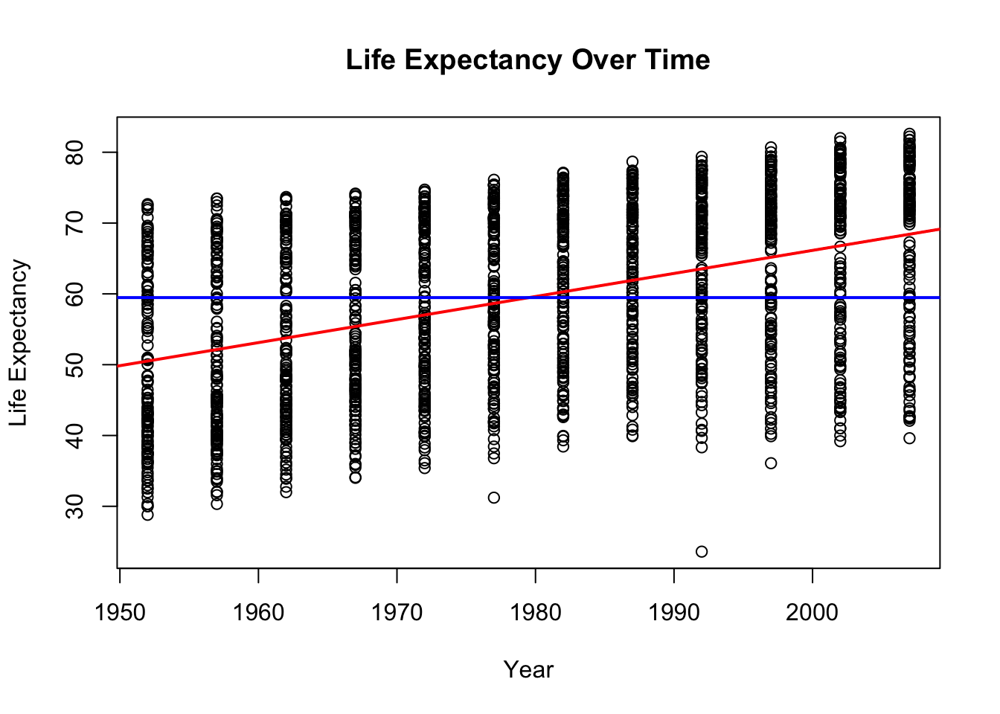
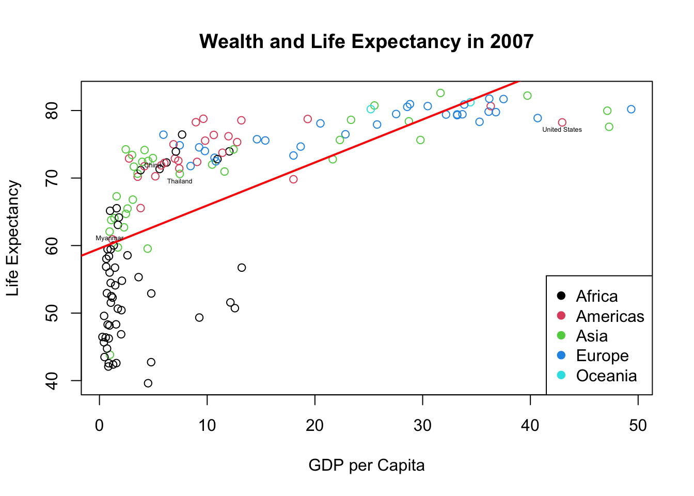

Today we’ll explore the gapminder data. It contains life expectancy, population, and GDP per capita for countries every five years from 1952 to 2007. The gapminder data comes from the Gapminder Foundation: https://www.gapminder.org/data/ made famous by Hans Rosling’s TED talks. We’ll continue our exploration using R to understand and visualize data.
Part 1: Getting to Know Gapminder
Make sure you have opened the Rproject first.
Today’s data comes packaged inside R itself. Instead of loading a file, we install a package once, then load it with library() each session.
Packages are like bonus material for R. We will use them all the time. Installing puts it on your computer. Library opens it(like a book) so everytime you use it you need library in your code first.
#install.packages("gapminder") #only run this once ever - then put the # back in frontlibrary(gapminder)data("gapminder") #Puts into our environment#install.packages("dplyr") #We'll use this package later, but always a good idea to load packages and data the beginning of your R scriptlibrary(dplyr)
Attaching package: 'dplyr'
The following objects are masked from 'package:stats':
filter, lag
The following objects are masked from 'package:base':
intersect, setdiff, setequal, union
Looking over the data using commmands from yesterday
(hint: use code from yesterday)
head(gapminder)
# A tibble: 6 × 6
country continent year lifeExp pop gdpPercap
<fct> <fct> <int> <dbl> <int> <dbl>
1 Afghanistan Asia 1952 28.8 8425333 779.
2 Afghanistan Asia 1957 30.3 9240934 821.
3 Afghanistan Asia 1962 32.0 10267083 853.
4 Afghanistan Asia 1967 34.0 11537966 836.
5 Afghanistan Asia 1972 36.1 13079460 740.
6 Afghanistan Asia 1977 38.4 14880372 786.
tail(gapminder)
# A tibble: 6 × 6
country continent year lifeExp pop gdpPercap
<fct> <fct> <int> <dbl> <int> <dbl>
1 Zimbabwe Africa 1982 60.4 7636524 789.
2 Zimbabwe Africa 1987 62.4 9216418 706.
3 Zimbabwe Africa 1992 60.4 10704340 693.
4 Zimbabwe Africa 1997 46.8 11404948 792.
5 Zimbabwe Africa 2002 40.0 11926563 672.
6 Zimbabwe Africa 2007 43.5 12311143 470.
summary(gapminder)
country continent year lifeExp
Afghanistan: 12 Africa :624 Min. :1952 Min. :23.60
Albania : 12 Americas:300 1st Qu.:1966 1st Qu.:48.20
Algeria : 12 Asia :396 Median :1980 Median :60.71
Angola : 12 Europe :360 Mean :1980 Mean :59.47
Argentina : 12 Oceania : 24 3rd Qu.:1993 3rd Qu.:70.85
Australia : 12 Max. :2007 Max. :82.60
(Other) :1632
pop gdpPercap
Min. :6.001e+04 Min. : 241.2
1st Qu.:2.794e+06 1st Qu.: 1202.1
Median :7.024e+06 Median : 3531.8
Mean :2.960e+07 Mean : 7215.3
3rd Qu.:1.959e+07 3rd Qu.: 9325.5
Max. :1.319e+09 Max. :113523.1
dim(gapminder) #Count of how many observations and variables
[1] 1704 6
str(gapminder) #This tells us what kind of data R thinks each variable is - we'll talk about this later
Plot the relationship between GDP per capita and life expectancy
plot(gapminder$gdpPercap, gapminder$lifeExp) #scatterplot (X then Y)abline(lm(gapminder$lifeExp~gapminder$gdpPercap)) #add trend line (Y then X)

Notice how we always put the explanatory variable on the X axis(horizantal) and the outcome variable on the Y axis (vertical)
GDP per capita hard to read - change unit to thousands
gapminder$gdpPercap <- gapminder$gdpPercap/1000
Make plot look a bit more professional
plot(gapminder$gdpPercap, gapminder$lifeExp, main="Relationship between Wealth and Life Expectancy", xlab="GDP per Capita", ylab="Life Expectancy")abline(lm(gapminder$lifeExp~gapminder$gdpPercap)) #and boom, you've already ran your 2nd regression

Does there appear to be a relationship in the sample?
What about with just Asia? There are multiple ways to do this:
We can create a new dataset ie a subset(I almost always choose this option)
table(gapminder$continent)
Africa Americas Asia Europe Oceania
624 300 396 360 24
asia <- gapminder[which(gapminder$continent=="Asia"),]asia <-filter(gapminder, continent=="Asia") # This does the same thing using the dplyr package from tidyverse. I find it much more intuitive than "base R" so tend to use it more often. plot(asia$gdpPercap, asia$lifeExp, main="Relationship between Wealth and Life Expectancy (Asia)", xlab="GDP per Capita", ylab="Life Expectancy")abline(lm(asia$lifeExp~asia$gdpPercap)) #and boom, another regression

Exclude Europe
noteuro <- gapminder[which(gapminder$continent!="Europe"),] # the != does not equalnoteuro <-filter(gapminder, continent!="Europe")
Exclude the super rich - use greater than or less than
notrich <- gapminder[which(gapminder$gdpPercap<50),] # less than 50,000 - this drops oil-rich outliers like Kuwaitnotrich <-filter(gapminder, gdpPercap<50)
Check in: Try creating a scatterplot with just the 1) Africa OR 2) country-years where life expectancy is less than 70.
africa <-filter(gapminder, continent=="Africa")plot(africa$gdpPercap, africa$lifeExp, main="Relationship between Wealth \n and Life Expectancy (Africa)", xlab="GDP per Capita", ylab="Life Expectancy", col=gapminder$country)abline(lm(africa$lifeExp~africa$gdpPercap)) #and boom, another regression

early <-filter(gapminder, lifeExp <70)plot(early$gdpPercap, early$lifeExp, main="Relationship between Wealth \n and Life Expectancy under 70", xlab="GDP per Capita", ylab="Life Expectancy", col=early$continent)abline(lm(early$lifeExp~early$gdpPercap), col="lightgreen") #and boom, another regression

table(early$country)
Afghanistan Albania Algeria
12 6 10
Angola Argentina Australia
12 7 1
Austria Bahrain Bangladesh
3 7 12
Belgium Benin Bolivia
2 12 12
Bosnia and Herzegovina Botswana Brazil
6 12 10
Bulgaria Burkina Faso Burundi
3 12 12
Cambodia Cameroon Canada
12 12 2
Central African Republic Chad Chile
12 12 6
China Colombia Comoros
9 9 12
Congo, Dem. Rep. Congo, Rep. Costa Rica
12 12 5
Cote d'Ivoire Croatia Cuba
12 5 4
Czech Republic Denmark Djibouti
3 0 12
Dominican Republic Ecuador Egypt
10 9 11
El Salvador Equatorial Guinea Eritrea
10 12 12
Ethiopia Finland France
12 4 2
Gabon Gambia Germany
12 12 2
Ghana Greece Guatemala
12 3 11
Guinea Guinea-Bissau Haiti
12 12 12
Honduras Hong Kong, China Hungary
11 3 9
Iceland India Indonesia
0 12 11
Iran Iraq Ireland
11 12 2
Israel Italy Jamaica
3 3 5
Japan Jordan Kenya
3 10 12
Korea, Dem. Rep. Korea, Rep. Kuwait
11 8 6
Lebanon Lesotho Liberia
9 12 12
Libya Madagascar Malawi
9 12 12
Malaysia Mali Mauritania
8 12 12
Mauritius Mexico Mongolia
9 8 12
Montenegro Morocco Mozambique
4 11 12
Myanmar Namibia Nepal
12 12 12
Netherlands New Zealand Nicaragua
0 1 10
Niger Nigeria Norway
12 12 0
Oman Pakistan Panama
8 12 6
Paraguay Peru Philippines
10 11 10
Poland Portugal Puerto Rico
4 5 3
Reunion Romania Rwanda
7 10 12
Sao Tome and Principe Saudi Arabia Senegal
12 9 12
Serbia Sierra Leone Singapore
5 12 5
Slovak Republic Slovenia Somalia
2 5 12
South Africa Spain Sri Lanka
12 3 8
Sudan Swaziland Sweden
12 12 0
Switzerland Syria Taiwan
1 9 5
Tanzania Thailand Togo
12 11 12
Trinidad and Tobago Tunisia Turkey
12 8 10
Uganda United Kingdom United States
12 1 2
Uruguay Venezuela Vietnam
6 7 9
West Bank and Gaza Yemen, Rep. Zambia
9 12 12
Zimbabwe
12
#Looking at the data over time: Time to look at something a bit more fun. How has life expectancy changed across the world since the 1950s?
Mean life expectancy?
mean(gapminder$lifeExp)
[1] 59.47444
min(gapminder$lifeExp)
[1] 23.599
max(gapminder$lifeExp)
[1] 82.603
range(gapminder$lifeExp)
[1] 23.599 82.603
Create a histogram for life expectancy
hist(gapminder$lifeExp)abline(v=mean(gapminder$lifeExp), col="blue", lwd=2)#adds a vertical(v) line for the meanabline(v=median(gapminder$lifeExp), col="red", lwd=2)#a a line for median

abline gives us a line. v is for vertical
Density plots and boxplots show us similar information
boxplot(gapminder$lifeExp)

plot(density(gapminder$lifeExp))

#How can we find out which country-years are at the very bottom?
Check: How many observations are from Africa and how many are from Europe
mean(gapminder$lifeExp[gapminder$continent=="Africa"]) #average for Africa
[1] 48.86533
mean(gapminder$lifeExp[gapminder$continent=="Europe"]) #average for Europe
[1] 71.90369
mean(asia$lifeExp)
[1] 60.0649
#find the mean for the Americas
Let’s make a simple scatterplot with year on the horizontal axis, and life expectancy on the vertical axis. A regression allows us to look at the relationship between variables linear regression model, and you’re looking at the effect of the IV on the DV
plot(gapminder$year, gapminder$lifeExp, ylab ="Life Expectancy", xlab ="Year", main ="Life Expectancy Over Time")abline(lm(gapminder$lifeExp ~ gapminder$year), col="red", lwd=2) # What type of relationship is this?abline(h=mean(gapminder$lifeExp), col="blue", lwd=2)

That is a bit overwhelming lets just look at 2007 - ie lets create a subset
g2007 <- gapminder[which(gapminder$year==2007),] #just using base R#New Graphplot(g2007$gdpPercap, g2007$lifeExp, ylab ="Life Expectancy", xlab ="GDP per Capita", main ="Wealth and Life Expectancy in 2007", col=g2007$continent) #color for continentabline(lm(g2007$lifeExp ~ g2007$gdpPercap), col="red", lwd=2)legend("bottomright", legend =levels(factor(g2007$continent)), pch=19, col =factor(levels(factor(g2007$continent))))#I want to add labels for specific countriesg2007$stars <-ifelse(g2007$country=="United States"|g2007$country=="China"|g2007$country=="Myanmar"|g2007$country=="Thailand", as.character(g2007$country), "") #create a new variable for notable countries, all else will be empty. text(g2007$gdpPercap, g2007$lifeExp-1, g2007$stars, cex=.4) #add text to location

Check: Can you create the same for 1952
A boxplot for each year can show us how the distribution has changed over time
I’ve clearly had too much fun. Your turn to make something interesting.
Since we’ve created some new variables we may want to save our data:
write.csv(g2007, "g2007.csv") #writes a csv to your working directory that you can open in excelsave(g2007, file="g2007.Rdata") #saves Rdata format to your working directory